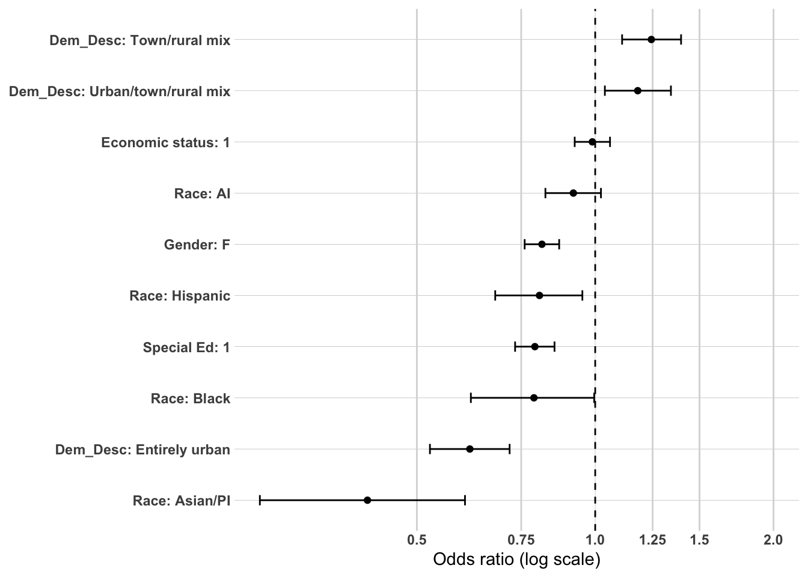
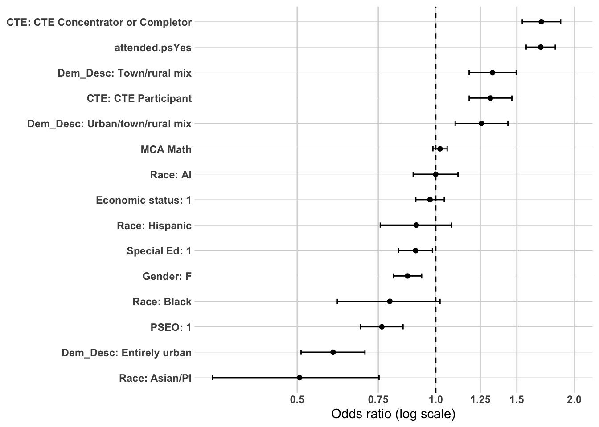
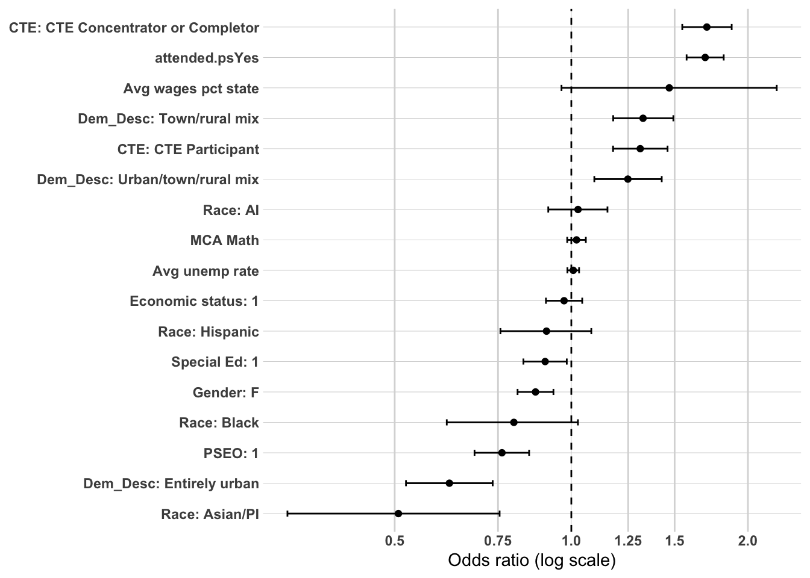
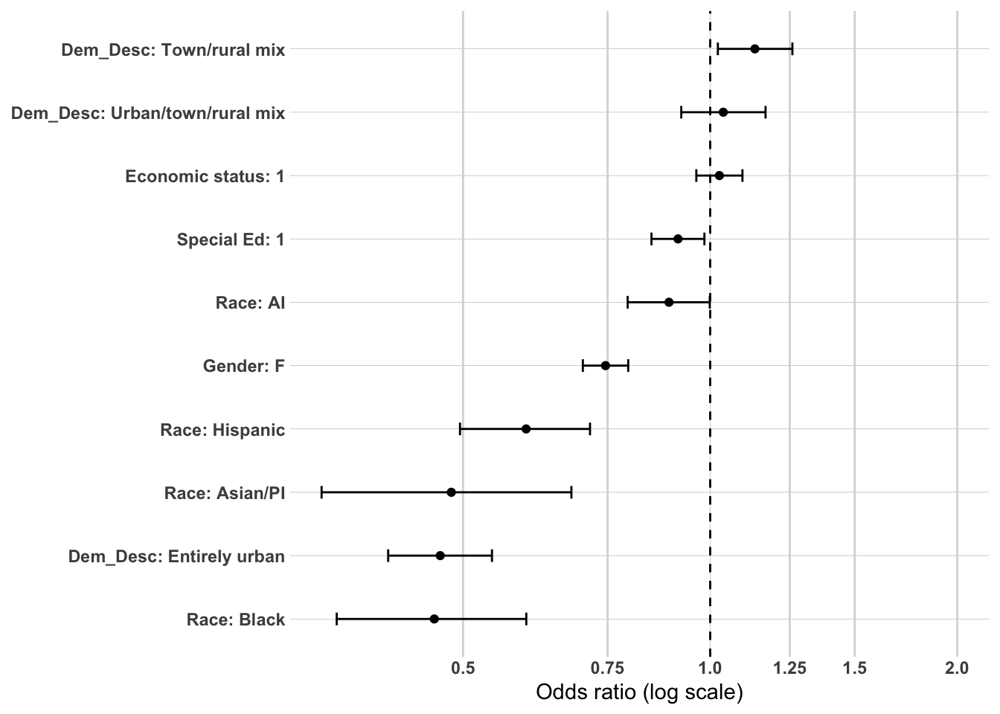
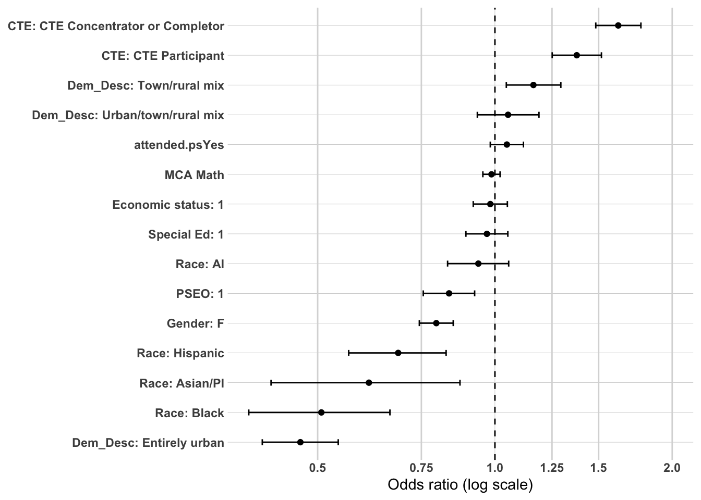
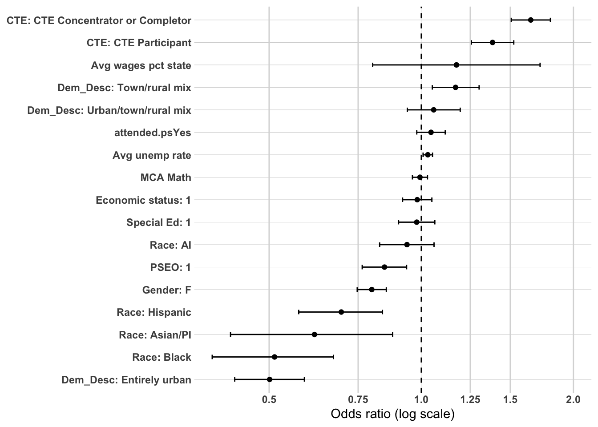
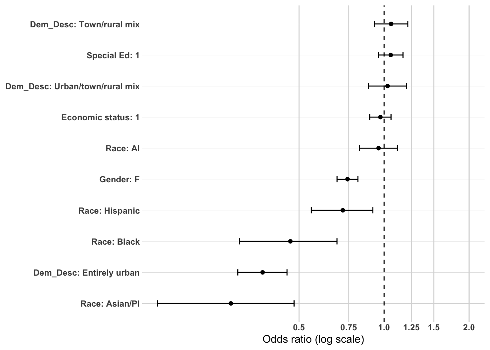
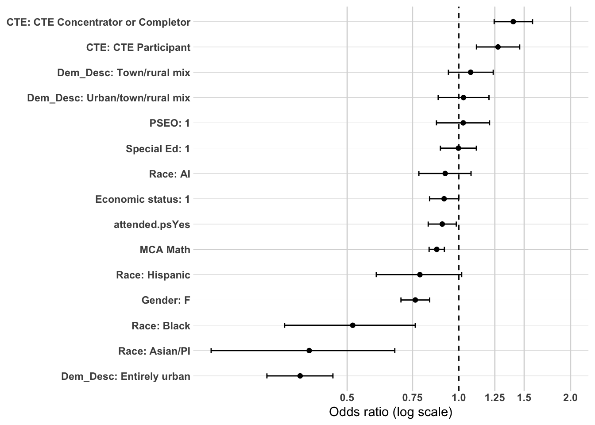
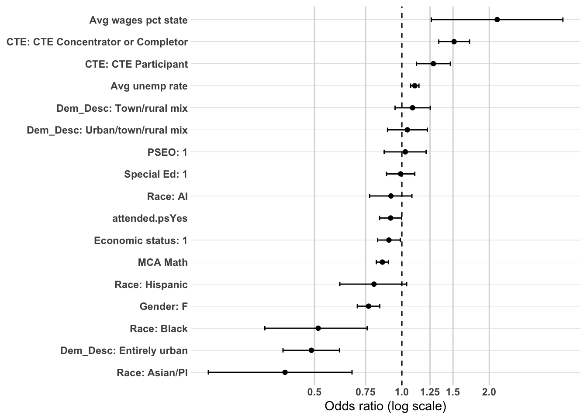

Multivariate Confirmation Analysis: Non-College Completers in Northwest Minnesota
The primary purpose of this supplemental analysis is to examine workforce participation pathways among individuals who did not complete a postsecondary credential. Earlier sections of this analysis demonstrated that among the full Northwest Minnesota population, postsecondary attainment — particularly where and how a credential was earned — was the dominant mechanism associated with sustained regional employment. This section shifts attention to the population for whom that mechanism does not operate.
Among non-college completers, workforce participation pathways cannot be explained by credential depth, institutional sector, or graduation location. Instead, the descriptive and bivariate analyses conducted earlier identified high school career alignment (CTE), post-secondary attendance without completion, community type, and gender as the central differentiators of workforce outcomes in this population.
To strengthen confidence in those findings, a limited multivariate analysis is conducted using logistic regression. As in the full-population analysis, the goal is not causal inference or prediction, but confirmatory testing — specifically, whether the strongest bivariate relationships remain directionally consistent when key predictors are considered simultaneously.
Logistic regression is used here as a confirmatory tool rather than the primary analytic framework.
Methodology
Study Population
The analytic sample is restricted to individuals who graduated from a high school in Northwest Minnesota and did not complete a postsecondary credential. This restriction isolates workforce dynamics among high school graduates entering the labor market directly, with or without some post-secondary exposure.
Outcome Variable
The primary model predicts:
Meaningful employment — region (binary outcome)
The dependent variable is coded as:
1 = Meaningful employment in the Northwest Minnesota region
0 = All other workforce outcomes (including meaningful employment elsewhere in Minnesota, not meaningful employment, and no Minnesota employment record)
This specification maintains consistency with earlier modeling while isolating mechanisms specific to the non-college completer population.
Independent Variables
Because postsecondary completion mechanisms are not applicable in this subgroup, the model focuses on high school preparation, structural background, and local labor market context identified as important in earlier analyses. Notably, the earlier bivariate analysis found that academic readiness measures (MCA scores) predicted out-of-region mobility rather than regional attachment, while CTE engagement was the most consistent and durable predictor of regional workforce attachment across all time points.
Predictors include:
High school accomplishments
cte.achievement — the strongest and most consistent predictor of regional workforce attachment identified in the bivariate analysis
total.cte.courses.taken — reinforces CTE achievement with a continuous dose-response measure
attended.ps — even without completion, post-secondary attendance showed meaningful associations with workforce outcomes
MCA.M — included as the primary academic readiness measure; expected to predict out-of-region rather than regional employment
pseo.participant — included to test whether early college exposure retains independent influence once other preparation variables are controlled
Demographic characteristics
Gender — the strongest demographic predictor, with males consistently more likely to achieve regional meaningful employment
RaceEthnicity — included for equity considerations despite negligible overall association
economic.status — included as a structural disadvantage indicator
SpecialEdStatus — strongest demographic predictor at year 1 in the bivariate analysis
High school and local context
Dem_Desc — the strongest high school characteristics predictor, with entirely urban non-completers showing dramatically higher disconnection rates
avg.unemp.rate — included with the explicit caveat that its counterintuitive direction likely reflects the North Dakota cross-border employment effect
avg.wages.pct.state — included as a complementary county-level economic context measure
Variables are selected based on:
Strength of association in prior bivariate and persistence analyses
Conceptual plausibility within a non-college pathway
Policy relevance
Avoidance of redundancy
Postsecondary completion variables are excluded by design.
Analysis Approach
This multivariate analysis mirrors the structured confirmatory framework used in the full-population models but is adapted to the non-college completer subgroup and the specific findings of the Northwest Minnesota analysis.
Time-Based Modeling Strategy
Workforce attachment evolves over time. To capture this dynamic process, models are estimated separately at:
1 year after high school
5 years after high school
10 years after high school
This staged approach allows examination of how mechanisms shift across early, mid-term, and longer-term workforce trajectories — a distinction that proved meaningful in the bivariate analysis, where several variables (particularly economic status, special education status, and PSEO participation) showed strong early associations that faded substantially over time.
Year 1: Immediate Labor Market Entry
The 1-year model captures the initial transition into the labor market. At this stage, high school preparation and career alignment are expected to exert the strongest influence. CTE exposure emerged as the strongest high school-level predictor at year 1 in the bivariate analysis, while post-secondary attendance had its largest association at this time point due to ongoing enrollment. The year 1 model tests whether these early preparation effects hold when structural and contextual factors are considered simultaneously.
Year 5: Stabilization Phase
The 5-year model reflects early career consolidation. The bivariate analysis showed that CTE’s influence stabilized at this point while other variables — particularly economic status and PSEO participation — had largely attenuated. This model evaluates whether CTE retains its independent regional retention effect and whether gender and community type become more prominent as careers develop.
Year 10: Long-Term Embeddedness
The 10-year model captures longer-term workforce integration. The bivariate analysis suggested that MCA scores became more clearly associated with out-of-region employment by year 10, while CTE remained stable. This model tests whether local labor market context — county wages and unemployment — becomes increasingly dominant over time, and whether the North Dakota border effect continues to complicate interpretation of the unemployment rate variable.
Modeling Strategy
Within each time period, predictors are introduced in a structured sequence:
Model 1: Structural and Demographic Baseline
Includes demographic characteristics and community type:
RaceEthnicity
economic.status
SpecialEdStatus
Gender
Dem_Desc
This baseline model evaluates whether structural background and community type independently differentiate regional workforce attachment prior to the inclusion of high school preparation variables. It also establishes whether the gender and urban/rural patterns identified in the bivariate analysis persist in a multivariate context.
Model 2: Add High School Accomplishments
Adds the following to Model 1:
cte.achievement
attended.ps
MCA.M
pseo.participant
This is the core explanatory model. Key questions include:
Does CTE retain its strong independent association with regional employment after controlling for demographics and community type?
Does attended post-secondary add independent signal beyond CTE engagement?
Do MCA scores show the expected negative association with regional employment, consistent with the out-of-region mobility pattern identified in the bivariate analysis?
Do structural disadvantage effects (economic status, special education) attenuate once preparation variables are included?
Model 3: Add Local Labor Market Context
Adds county-level economic context to Model 2:
avg.wages.pct.state
avg.unemp.rate
Key questions include:
Does the counterintuitive unemployment rate direction persist in a multivariate context, and does it attenuate the Dem_Desc effect once included?
Do county wages add independent signal beyond community type?
Do CTE and demographic effects remain stable once local economic context is accounted for?
This is the full confirmatory specification.
Evaluation Criteria
Results will be reported using:
Odds ratios
95% confidence intervals
Statistical significance levels
Directional interpretation
Model comparison metrics (AIC and pseudo R²) will be used to assess relative improvement across specifications, but emphasis will remain on coefficient magnitude and stability across time points and model specifications.
Interpretation Framework
Interpretation will focus on:
Whether CTE retains independent influence across all three time points — the central confirmatory question given its dominance in the bivariate analysis
Whether gender and community type effects persist once preparation and economic context are controlled
Whether the unemployment rate’s counterintuitive direction is sustained in the multivariate context, providing further confirmation of the North Dakota border effect
How mechanisms shift from Year 1 to Year 10, and whether structural or contextual factors become increasingly dominant over time
Findings will be described as associations holding other included variables constant. No causal claims will be made.
Conceptual Focus
For non-college completers in Northwest Minnesota, this time-structured modeling framework evaluates three evolving mechanisms:
Career alignment at labor market entry — captured primarily through CTE engagement and post-secondary attendance
Structural advantage or disadvantage shaping early stability — captured through demographic characteristics and community type
Local economic opportunity structures influencing long-term embeddedness — captured through county-level wage and unemployment measures, with explicit attention to the North Dakota border effect
Together, these models clarify whether sustained regional employment among non-college completers in Northwest Minnesota reflects early career alignment, structural inequality, local economic context, or a combination of all three — and whether the relative importance of these mechanisms shifts across the first decade after high school.
Prep data
The first thing I need to do is setup my dataset for modeling. I’m going to create the workforce participation into a binary and will use grad.year.1, grad.year.5 and grad.year.10 as my modeling year.
We now have 21,268 individuals to model with 11 variables not including grad.year.5.
Modeling - grad.year.1
Model 1 — Year 1: Structural and Demographic Baseline
Model 1 establishes the baseline associations between demographic characteristics and community type with meaningful regional employment one year after high school, prior to the inclusion of any high school preparation variables. The model shows modest improvement over the null (AIC = 22,040, residual deviance = 22,020 vs. null deviance = 22,280), consistent with expectations that structural factors alone explain only a limited portion of regional workforce attachment.
Gender and special education status show the strongest associations in this baseline model:
Females have approximately 19% lower odds of meaningful regional employment relative to males (OR = 0.813, p < .001), consistent with the male-dominated industry composition of the NW region identified throughout the bivariate analysis
Students with special education status have approximately 21% lower odds of meaningful regional employment relative to non-special education students (OR = 0.791, p < .001)
Community type shows meaningful and expected associations:
Entirely urban non-completers have approximately 39% lower odds of meaningful regional employment relative to entirely rural students (OR = 0.614, p < .001), the strongest single association in the model and consistent with the striking urban disconnection pattern identified throughout the earlier analyses
Town/rural mix students have approximately 24% higher odds of regional employment relative to entirely rural students (OR = 1.244, p < .001), reinforcing their consistently favorable workforce attachment pattern
Urban/town/rural mix students also show modestly higher odds (OR = 1.180, p = .012)
Race/ethnicity shows mixed results:
Asian/PI non-completers have substantially lower odds of regional employment relative to White students (OR = 0.413, p < .001), the largest racial/ethnic disparity in the model
Hispanic non-completers show significantly lower odds (OR = 0.805, p = .012)
American Indian and Black non-completers show lower odds but do not reach statistical significance at the .01 level
Economic status shows no significant independent association with regional employment at year 1 (OR = 0.989, p = .752), consistent with the negligible bivariate finding.
Model note: The baseline model confirms the structural patterns identified in the bivariate analysis — gender, special education status, and community type are the dominant structural associates of regional workforce attachment at year 1. The introduction of high school preparation variables in Model 2 will test whether these associations persist or attenuate once career alignment is accounted for.
or_plot <-tidy(model1, conf.int =TRUE, exponentiate =TRUE) %>%filter(term !="(Intercept)") %>%mutate(# Make labels nicer (edit these replacements to match your exact factor labels)term =str_replace_all(term, c("RaceEthnicity"="Race: ","economic.status"="Economic status: ","Gender"="Gender: ","SpecialEdStatus"="Special Ed: ","Dem_Desc"="Dem_Desc: " )),# Put most important effects near the top (optional: tweak ordering later)term =fct_reorder(term, estimate) )ggplot(or_plot, aes(x = estimate, y = term)) +geom_vline(xintercept =1, linetype ="dashed") +geom_vline(xintercept =c(0.5, 0.75, 1.25, 1.5, 2),color ="grey85") +geom_point() +geom_errorbar(aes(xmin = conf.low, xmax = conf.high),orientation ="y",width =0.2 ) +scale_x_log10(breaks =c(0.5, 0.75, 1, 1.25, 1.5, 2),labels =c("0.5", "0.75", "1.0", "1.25", "1.5", "2.0") ) + theme_line +labs(x ="Odds ratio (log scale)",y =NULL )

Model 2 — Year 1: Adding High School Accomplishments
Model 2 introduces high school preparation variables alongside the structural baseline, producing substantial improvement in model fit (AIC = 20,700 vs. 22,040 in Model 1, residual deviance = 20,670 vs. 22,020). Note that 1,441 observations are lost due to missing MCA scores, so direct AIC comparison with Model 1 should be interpreted with some caution.
Attended post-secondary and CTE achievement emerge as the two strongest associations in the model:
Non-completers who attended post-secondary have approximately 69% higher odds of meaningful regional employment relative to those who never attended (OR = 1.690, p < .001), the largest single association in the model. This finding is notable — even without completing a credential, post-secondary attendance is strongly associated with regional workforce attachment at year 1
CTE concentrators and completers have approximately 70% higher odds of meaningful regional employment relative to non-CTE students (OR = 1.695, p < .001), nearly identical in magnitude to attended post-secondary and retaining robust independent influence net of all other variables
CTE participants have approximately 31% higher odds relative to non-CTE students (OR = 1.314, p < .001), confirming the dose-response pattern identified throughout the bivariate analysis
Community type associations strengthen with the addition of preparation variables:
Entirely urban non-completers retain approximately 40% lower odds of regional employment relative to entirely rural students (OR = 0.598, p < .001), nearly unchanged from Model 1, indicating that community type operates independently of high school preparation
Town/rural mix students show stronger higher odds (OR = 1.328, p < .001) compared to Model 1 (OR = 1.244), suggesting that preparation variables reveal a slightly stronger geographic effect once controlled
Urban/town/rural mix students also show higher odds (OR = 1.256, p = .001)
PSEO participation shows a significant negative association with regional employment (OR = 0.763, p < .001), consistent with the earlier bivariate finding that PSEO is associated with post-secondary continuation and out-of-region mobility rather than regional workforce attachment
Gender and special education status attenuate compared to Model 1:
The gender gap narrows from OR = 0.813 in Model 1 to OR = 0.869 (p < .001), suggesting that some of the gender gap in regional employment is explained by differences in high school preparation and post-secondary attendance
Special education status attenuates more substantially, from OR = 0.791 in Model 1 to OR = 0.904 (p = .019), indicating that preparation variables explain a meaningful portion of this structural disadvantage, though the association remains significant
MCA Math shows no significant independent association with regional employment at year 1 (OR = 1.021, p = .245), consistent with the bivariate finding that academic proficiency does not strongly differentiate regional from non-regional outcomes in the short term
Race/ethnicity and economic status attenuate further compared to Model 1:
Hispanic non-completers are no longer significantly associated with lower regional employment (OR = 0.907, p = .283), suggesting their earlier disadvantage was partially explained by preparation and attendance differences
Economic status remains non-significant (OR = 0.971, p = .424)
Model note: The addition of high school preparation variables substantially improves model fit and confirms both CTE engagement and post-secondary attendance as the dominant independent associates of regional workforce attachment at year 1. The stability of community type effects and the partial attenuation of gender and special education associations suggest preparation and structural factors operate through partially distinct mechanisms. Model 3 will test whether local labor market context further explains remaining structural gaps.
or_plot <-tidy(model2, conf.int =TRUE, exponentiate =TRUE) %>%filter(term !="(Intercept)") %>%mutate(# Make labels nicer (edit these replacements to match your exact factor labels)term =str_replace_all(term, c("RaceEthnicity"="Race: ","economic.status"="Economic status: ","SpecialEdStatus"="Special Ed: ","pseo.participant"="PSEO: ","cte.achievement"="CTE: ","MCA.R"="MCA Reading","MCA.M"="MCA Math","Dem_Desc"="Dem_Desc: ","Gender"="Gender: ","took.ACT"="Took ACT: " )),# Put most important effects near the top (optional: tweak ordering later)term =fct_reorder(term, estimate) )ggplot(or_plot, aes(x = estimate, y = term)) +geom_vline(xintercept =1, linetype ="dashed") +geom_vline(xintercept =c(0.5, 0.75, 1.25, 1.5, 2),color ="grey85") +geom_point() +geom_errorbar(aes(xmin = conf.low, xmax = conf.high),orientation ="y",width =0.2 ) +scale_x_log10(breaks =c(0.5, 0.75, 1, 1.25, 1.5, 2),labels =c("0.5", "0.75", "1.0", "1.25", "1.5", "2.0") ) + theme_line +labs(x ="Odds ratio (log scale)",y =NULL )

Model 3 — Year 1: Adding Local Labor Market Context
Model 3 adds county-level unemployment rate and wages as a percent of state average to the full Model 2 specification. The addition of these two variables produces no meaningful improvement in model fit — AIC remains unchanged at 20,700 and residual deviance is essentially identical to Model 2 (20,670) — indicating that local labor market context adds no independent explanatory power to regional workforce attachment at year 1 beyond what is already captured by community type, preparation, and structural variables.
All core associations from Model 2 remain stable:
CTE concentrators and completers retain approximately 70% higher odds of regional employment (OR = 1.702, p < .001), essentially unchanged from Model 2 (OR = 1.695)
Attended post-secondary retains approximately 69% higher odds (OR = 1.691, p < .001), unchanged from Model 2 (OR = 1.690)
CTE participants retain approximately 31% higher odds (OR = 1.311, p < .001)
PSEO participation retains its negative association (OR = 0.762, p < .001)
Community type associations remain stable — entirely urban non-completers retain approximately 38% lower odds (OR = 0.620, p < .001) and town/rural mix students retain approximately 33% higher odds (OR = 1.325, p < .001)
Gender and special education status associations are essentially unchanged from Model 2
Neither labor market variable shows a significant independent association:
Average unemployment rate shows no significant association with regional employment at year 1 (OR = 1.008, p = .512), consistent with the counterintuitive and ambiguous pattern identified in the bivariate analysis
Average wages as a percent of state average also shows no significant association (OR = 1.469, p = .074), though the direction is positive — higher wage counties are modestly associated with higher regional employment odds
Race/ethnicity and economic status remain unchanged from Model 2 — Asian/PI non-completers retain significantly lower odds (OR = 0.507, p = .001) and economic status remains non-significant (OR = 0.972, p = .434)
Model note: The addition of local labor market context variables adds no meaningful explanatory power at year 1, confirming that regional workforce attachment in the immediate post-high school period is driven primarily by high school preparation — particularly CTE engagement and post-secondary attendance — and structural characteristics rather than local economic conditions. The stability of all Model 2 associations across Model 3 strengthens confidence in the core findings. The counterintuitive unemployment rate direction seen in the bivariate analysis does not persist as a significant association in the multivariate context, suggesting it was largely a compositional artifact rather than an independent mechanism.
or_plot <-tidy(model3, conf.int =TRUE, exponentiate =TRUE) %>%filter(term !="(Intercept)") %>%mutate(# Make labels nicer (edit these replacements to match your exact factor labels)term =str_replace_all(term, c("RaceEthnicity"="Race: ","economic.status"="Economic status: ","SpecialEdStatus"="Special Ed: ","pseo.participant"="PSEO: ","cte.achievement"="CTE: ","MCA.R"="MCA Reading","MCA.M"="MCA Math","Dem_Desc"="Dem_Desc: ","Gender"="Gender: ","took.ACT"="Took ACT: ","avg.unemp.rate"="Avg unemp rate","avg.wages.pct.state"="Avg wages pct state" )),# Put most important effects near the top (optional: tweak ordering later)term =fct_reorder(term, estimate) )ggplot(or_plot, aes(x = estimate, y = term)) +geom_vline(xintercept =1, linetype ="dashed") +geom_vline(xintercept =c(0.5, 0.75, 1.25, 1.5, 2),color ="grey85") +geom_point() +geom_errorbar(aes(xmin = conf.low, xmax = conf.high),orientation ="y",width =0.2 ) +scale_x_log10(breaks =c(0.5, 0.75, 1, 1.25, 1.5, 2),labels =c("0.5", "0.75", "1.0", "1.25", "1.5", "2.0") ) + theme_line +labs(x ="Odds ratio (log scale)",y =NULL )

Modeling - grad.year.5
Model 1 — Year 5: Structural and Demographic Baseline
Model 1 establishes the baseline associations between demographic characteristics and community type with meaningful regional employment five years after high school, prior to the inclusion of any high school preparation variables. The model shows modest improvement over the null (AIC = 24,080, residual deviance = 24,050 vs. null deviance = 24,500), consistent with expectations that structural factors alone explain only a limited portion of regional workforce attachment.
Gender shows the strongest demographic association in the model and strengthens compared to year 1:
Females have approximately 25% lower odds of meaningful regional employment relative to males (OR = 0.746, p < .001), a larger gap than at year 1 (OR = 0.813), suggesting the gender disparity in regional workforce attachment widens over time
Community type shows stronger associations at year 5 than at year 1:
Entirely urban non-completers have approximately 53% lower odds of meaningful regional employment relative to entirely rural students (OR = 0.469, p < .001), a substantially larger gap than at year 1 (OR = 0.614), indicating that the urban penalty for regional workforce attachment grows over time
Town/rural mix students show modestly higher odds (OR = 1.134, p = .019), though the advantage is smaller than at year 1 (OR = 1.244)
Urban/town/rural mix students show no significant association at year 5 (OR = 1.037, p = .542), unlike year 1
Race/ethnicity shows stronger and broader associations at year 5 compared to year 1:
Black non-completers now show substantially lower odds of regional employment relative to White students (OR = 0.461, p < .001), a much stronger association than at year 1 where the effect was non-significant
Hispanic non-completers show significantly lower odds (OR = 0.597, p < .001), also stronger than at year 1 (OR = 0.805)
American Indian non-completers now show a marginally significant association (OR = 0.891, p = .049)
Special education status shows a weaker association at year 5 than at year 1:
Students with special education status have approximately 9% lower odds of meaningful regional employment (OR = 0.914, p = .017), a substantially smaller gap than at year 1 (OR = 0.791), consistent with the bivariate finding that special education status is most consequential in the immediate post-high school period
Economic status shows no significant independent association with regional employment at year 5 (OR = 1.026, p = .434), consistent with year 1 findings.
Model note: The year 5 baseline model reveals two important shifts from year 1 — the gender gap and urban penalty both widen over time, while the special education disadvantage attenuates. Racial and ethnic disparities are broader and stronger at year 5, suggesting these gaps grow rather than narrow as careers develop. The introduction of high school preparation variables in Model 2 will test whether these structural patterns persist once career alignment is accounted for.
or_plot <-tidy(model1, conf.int =TRUE, exponentiate =TRUE) %>%filter(term !="(Intercept)") %>%mutate(# Make labels nicer (edit these replacements to match your exact factor labels)term =str_replace_all(term, c("RaceEthnicity"="Race: ","economic.status"="Economic status: ","Gender"="Gender: ","SpecialEdStatus"="Special Ed: ","Dem_Desc"="Dem_Desc: " )),# Put most important effects near the top (optional: tweak ordering later)term =fct_reorder(term, estimate) )ggplot(or_plot, aes(x = estimate, y = term)) +geom_vline(xintercept =1, linetype ="dashed") +geom_vline(xintercept =c(0.5, 0.75, 1.25, 1.5, 2),color ="grey85") +geom_point() +geom_errorbar(aes(xmin = conf.low, xmax = conf.high),orientation ="y",width =0.2 ) +scale_x_log10(breaks =c(0.5, 0.75, 1, 1.25, 1.5, 2),labels =c("0.5", "0.75", "1.0", "1.25", "1.5", "2.0") ) + theme_line +labs(x ="Odds ratio (log scale)",y =NULL )

Model 2 — Year 5: Adding High School Accomplishments
Model 2 introduces high school preparation variables alongside the structural baseline, producing meaningful improvement in model fit (AIC = 22,910 vs. 24,080 in Model 1, residual deviance = 22,880 vs. 24,050). Note that 1,330 observations are lost due to missing MCA scores, so direct AIC comparison with Model 1 should be interpreted with some caution.
CTE achievement emerges as the dominant associate at year 5, with attended post-secondary losing its earlier influence:
CTE concentrators and completers have approximately 62% higher odds of meaningful regional employment relative to non-CTE students (OR = 1.620, p < .001), retaining robust independent influence net of all demographic and community type variables, though slightly attenuated from year 1 (OR = 1.695)
CTE participants have approximately 38% higher odds relative to non-CTE students (OR = 1.377, p < .001), somewhat stronger than at year 1 (OR = 1.314), suggesting even moderate CTE engagement has a growing influence on regional attachment over time
Attended post-secondary is no longer significantly associated with regional employment at year 5 (OR = 1.048, p = .158), a striking contrast to year 1 where it was the strongest associate in the model (OR = 1.690). This confirms that post-secondary attendance provides a short-term but not durable boost to regional workforce attachment among non-completers
Community type associations remain strong and largely unchanged from Model 1 at year 5:
Entirely urban non-completers retain approximately 53% lower odds of regional employment relative to entirely rural students (OR = 0.467, p < .001), essentially unchanged from the year 5 baseline model, again indicating that community type operates independently of high school preparation
Town/rural mix students retain modestly higher odds (OR = 1.162, p = .006)
Urban/town/rural mix students remain non-significant (OR = 1.053, p = .404)
PSEO participation retains a significant negative association with regional employment (OR = 0.836, p < .001), though the magnitude is smaller than at year 1 (OR = 0.762), suggesting its out-of-region mobility effect moderates somewhat over time
Gender attenuates but remains strongly significant:
Females have approximately 21% lower odds of meaningful regional employment relative to males (OR = 0.795, p < .001), compared to 25% lower odds in the year 5 baseline model, indicating that preparation variables explain some but not all of the gender gap
Special education status fully attenuates at year 5:
The special education association is no longer significant (OR = 0.969, p = .453), consistent with the bivariate finding that special education status primarily shapes early transitions rather than longer-term workforce trajectories
Race/ethnicity disparities persist and remain substantial even after controlling for preparation variables:
Black non-completers retain approximately 49% lower odds of regional employment relative to White students (OR = 0.507, p < .001)
Hispanic non-completers retain approximately 32% lower odds (OR = 0.685, p < .001)
Asian/PI non-completers retain approximately 39% lower odds (OR = 0.611, p = .009)
American Indian non-completers are no longer significant (OR = 0.937, p = .287)
MCA Math remains non-significant at year 5 (OR = 0.987, p = .431), and notably the direction reverses slightly compared to year 1, though the effect is negligible
Economic status remains non-significant (OR = 0.982, p = .596)
Model note: The year 5 Model 2 reveals an important shift from year 1 — CTE engagement becomes the clear dominant associate of regional workforce attachment while post-secondary attendance loses its influence entirely. The persistence of racial and ethnic disparities net of preparation variables is notable and suggests structural inequities operating beyond high school characteristics. Model 3 will test whether local labor market context explains any of the remaining variation.
or_plot <-tidy(model2, conf.int =TRUE, exponentiate =TRUE) %>%filter(term !="(Intercept)") %>%mutate(# Make labels nicer (edit these replacements to match your exact factor labels)term =str_replace_all(term, c("RaceEthnicity"="Race: ","economic.status"="Economic status: ","SpecialEdStatus"="Special Ed: ","pseo.participant"="PSEO: ","cte.achievement"="CTE: ","MCA.R"="MCA Reading","MCA.M"="MCA Math","Dem_Desc"="Dem_Desc: ","Gender"="Gender: ","took.ACT"="Took ACT: " )),# Put most important effects near the top (optional: tweak ordering later)term =fct_reorder(term, estimate) )ggplot(or_plot, aes(x = estimate, y = term)) +geom_vline(xintercept =1, linetype ="dashed") +geom_vline(xintercept =c(0.5, 0.75, 1.25, 1.5, 2),color ="grey85") +geom_point() +geom_errorbar(aes(xmin = conf.low, xmax = conf.high),orientation ="y",width =0.2 ) +scale_x_log10(breaks =c(0.5, 0.75, 1, 1.25, 1.5, 2),labels =c("0.5", "0.75", "1.0", "1.25", "1.5", "2.0") ) + theme_line +labs(x ="Odds ratio (log scale)",y =NULL )

Model 3 — Year 5: Adding Local Labor Market Context
Model 3 adds county-level unemployment rate and wages as a percent of state average to the full Model 2 specification, producing a very modest improvement in model fit (AIC = 22,900 vs. 22,910 in Model 2, residual deviance = 22,870 vs. 22,880). While minimal, this represents a slight improvement over year 1 where the labor market variables added nothing at all, suggesting local economic context begins to play a modest role in regional workforce attachment by year 5.
All core associations from Model 2 remain stable:
CTE concentrators and completers retain approximately 65% higher odds of regional employment (OR = 1.647, p < .001), slightly stronger than in Model 2 (OR = 1.620)
CTE participants retain approximately 38% higher odds (OR = 1.384, p < .001), essentially unchanged from Model 2
Attended post-secondary remains non-significant (OR = 1.045, p = .180), confirming its earlier dissipation at year 5
PSEO participation retains its negative association (OR = 0.846, p = .001)
Gender retains approximately 20% lower odds for females (OR = 0.798, p < .001), essentially unchanged from Model 2
Special education status remains non-significant (OR = 0.979, p = .622)
Economic status remains non-significant (OR = 0.982, p = .587)
Community type associations shift modestly with the addition of labor market variables:
Entirely urban non-completers show approximately 50% lower odds of regional employment (OR = 0.501, p < .001), a modest improvement from Model 2 (OR = 0.467), suggesting that some of the urban penalty is explained by the lower wage and higher unemployment context of urban counties in NW Minnesota
Town/rural mix students retain modestly higher odds (OR = 1.169, p = .004)
Urban/town/rural mix students remain non-significant (OR = 1.058, p = .358)
Average unemployment rate shows a significant and now intuitive association at year 5:
Higher county unemployment is associated with approximately 3% higher odds of regional employment per unit increase (OR = 1.030, p = .007) — a small but statistically significant effect in the expected direction
This contrasts sharply with the counterintuitive bivariate finding and the non-significant year 1 result, suggesting that once individual and community characteristics are controlled, living in a higher unemployment county is modestly associated with staying in the regional labor market rather than leaving it — consistent with a constrained mobility interpretation
Average wages as a percent of state average remains non-significant at year 5 (OR = 1.174, p = .410), consistent with year 1
Race/ethnicity disparities remain substantial and largely unchanged from Model 2:
Black non-completers retain approximately 49% lower odds (OR = 0.513, p < .001)
Hispanic non-completers retain approximately 31% lower odds (OR = 0.695, p < .001)
Asian/PI non-completers retain approximately 39% lower odds (OR = 0.615, p = .010)
American Indian non-completers remain non-significant (OR = 0.937, p = .303)
Model note: The year 5 Model 3 reveals an important and interpretively rich finding — the unemployment rate emerges as a modest but significant associate of regional employment in the expected direction once other variables are controlled, reversing the counterintuitive bivariate pattern. This suggests that the earlier bivariate finding was indeed a compositional artifact, and that by year 5 local labor market context begins to play a small independent role in shaping regional workforce attachment. CTE engagement remains the dominant modifiable associate throughout, while racial and ethnic disparities persist net of all other variables.
or_plot <-tidy(model3, conf.int =TRUE, exponentiate =TRUE) %>%filter(term !="(Intercept)") %>%mutate(# Make labels nicer (edit these replacements to match your exact factor labels)term =str_replace_all(term, c("RaceEthnicity"="Race: ","economic.status"="Economic status: ","SpecialEdStatus"="Special Ed: ","pseo.participant"="PSEO: ","cte.achievement"="CTE: ","MCA.R"="MCA Reading","MCA.M"="MCA Math","Dem_Desc"="Dem_Desc: ","Gender"="Gender: ","took.ACT"="Took ACT: ","avg.unemp.rate"="Avg unemp rate","avg.wages.pct.state"="Avg wages pct state" )),# Put most important effects near the top (optional: tweak ordering later)term =fct_reorder(term, estimate) )ggplot(or_plot, aes(x = estimate, y = term)) +geom_vline(xintercept =1, linetype ="dashed") +geom_vline(xintercept =c(0.5, 0.75, 1.25, 1.5, 2),color ="grey85") +geom_point() +geom_errorbar(aes(xmin = conf.low, xmax = conf.high),orientation ="y",width =0.2 ) +scale_x_log10(breaks =c(0.5, 0.75, 1, 1.25, 1.5, 2),labels =c("0.5", "0.75", "1.0", "1.25", "1.5", "2.0") ) + theme_line +labs(x ="Odds ratio (log scale)",y =NULL )

Modeling - grad.year.10
Model 1 — Year 10: Structural and Demographic Baseline
Model 1 establishes the baseline associations between demographic characteristics and community type with meaningful regional employment ten years after high school, prior to the inclusion of any high school preparation variables. The model shows modest improvement over the null (AIC = 13,630, residual deviance = 13,610 vs. null deviance = 13,910), consistent with the pattern across all three time points that structural factors alone explain only a limited portion of regional workforce attachment.
Gender retains a strong and stable association at year 10:
Females have approximately 26% lower odds of meaningful regional employment relative to males (OR = 0.742, p < .001), consistent with year 5 (OR = 0.746) and suggesting the gender gap in regional workforce attachment stabilizes rather than continues to widen after year 5
Community type shows its strongest associations yet, driven almost entirely by the urban penalty:
Entirely urban non-completers have approximately 63% lower odds of meaningful regional employment relative to entirely rural students (OR = 0.371, p < .001), the largest urban penalty observed across all three time points and the strongest single association in the model. This growing penalty suggests that urban non-completers become increasingly disconnected from the regional labor market over time rather than eventually finding their footing
Town/rural mix students are no longer significantly associated with higher regional employment at year 10 (OR = 1.059, p = .411), a notable shift from years 1 and 5 where this group showed consistently higher odds
Urban/town/rural mix students also show no significant association (OR = 1.029, p = .714)
Race/ethnicity disparities remain substantial at year 10:
Asian/PI non-completers show the largest racial/ethnic disparity in the model (OR = 0.287, p < .001), substantially larger than at year 5 (OR = 0.484)
Black non-completers retain approximately 53% lower odds (OR = 0.466, p < .001), consistent with year 5
Hispanic non-completers show approximately 29% lower odds (OR = 0.714, p = .008), somewhat attenuated from year 5 (OR = 0.597)
American Indian non-completers remain non-significant (OR = 0.956, p = .568)
Special education status shows a notable reversal at year 10:
The association is no longer significant and flips direction (OR = 1.056, p = .282), suggesting that by year 10 special education status carries no meaningful independent association with regional employment — a complete turnaround from year 1 where it showed approximately 21% lower odds
Economic status remains non-significant across all three time points (OR = 0.970, p = .498)
Model note: The year 10 baseline model reveals two key developments — the urban penalty continues to intensify over time while the town/rural mix advantage disappears, and special education status fully dissipates and reverses direction. Racial and ethnic disparities remain substantial, particularly for Asian/PI and Black non-completers. The introduction of high school preparation variables in Model 2 will test whether these long-term structural patterns persist once career alignment is accounted for.
or_plot <-tidy(model1, conf.int =TRUE, exponentiate =TRUE) %>%filter(term !="(Intercept)") %>%mutate(# Make labels nicer (edit these replacements to match your exact factor labels)term =str_replace_all(term, c("RaceEthnicity"="Race: ","economic.status"="Economic status: ","Gender"="Gender: ","SpecialEdStatus"="Special Ed: ","Dem_Desc"="Dem_Desc: " )),# Put most important effects near the top (optional: tweak ordering later)term =fct_reorder(term, estimate) )ggplot(or_plot, aes(x = estimate, y = term)) +geom_vline(xintercept =1, linetype ="dashed") +geom_vline(xintercept =c(0.5, 0.75, 1.25, 1.5, 2),color ="grey85") +geom_point() +geom_errorbar(aes(xmin = conf.low, xmax = conf.high),orientation ="y",width =0.2 ) +scale_x_log10(breaks =c(0.5, 0.75, 1, 1.25, 1.5, 2),labels =c("0.5", "0.75", "1.0", "1.25", "1.5", "2.0") ) + theme_line +labs(x ="Odds ratio (log scale)",y =NULL )

Model 2 — Year 10: Adding High School Accomplishments
Model 2 introduces high school preparation variables alongside the structural baseline, producing meaningful improvement in model fit (AIC = 12,870 vs. 13,630 in Model 1, residual deviance = 12,840 vs. 13,610). Note that 935 observations are lost due to missing MCA scores, so direct AIC comparison with Model 1 should be interpreted with some caution.
CTE achievement retains a significant and positive association at year 10, though attenuated compared to earlier time points:
CTE concentrators and completers have approximately 40% higher odds of meaningful regional employment relative to non-CTE students (OR = 1.401, p < .001), down from approximately 62% at year 5 and 70% at year 1, suggesting CTE’s regional retention effect moderates over time but remains a durable and independent associate
CTE participants have approximately 27% higher odds relative to non-CTE students (OR = 1.275, p < .001), also attenuated from year 5 (OR = 1.377)
MCA Math emerges as a significant negative associate at year 10:
Higher math proficiency is associated with approximately 13% lower odds of meaningful regional employment per unit increase (OR = 0.872, p < .001), the first time MCA Math reaches significance across the three time points and in the expected direction — confirming the bivariate finding that academic proficiency increasingly predicts out-of-region mobility as careers develop
Attended post-secondary reverses direction at year 10:
Non-completers who attended post-secondary now show approximately 10% lower odds of meaningful regional employment (OR = 0.902, p = .020), a complete reversal from year 1 where it showed approximately 69% higher odds. This suggests that by year 10, post-secondary exposure — even without completion — is associated with outward labor market mobility rather than regional attachment, mirroring the pattern seen for academic proficiency
PSEO participation is no longer significant at year 10 (OR = 1.027, p = .748), reversing from its consistent negative association at years 1 and 5. By year 10, early college exposure no longer differentiates regional from non-regional employment outcomes
Community type associations remain dominated by the urban penalty:
Entirely urban non-completers retain approximately 63% lower odds of regional employment relative to entirely rural students (OR = 0.373, p < .001), essentially unchanged from the year 10 baseline model and confirming that the urban penalty is fully structural and independent of preparation variables
Town/rural mix and urban/town/rural mix students remain non-significant, consistent with Model 1
Gender retains a stable association:
Females have approximately 24% lower odds of meaningful regional employment relative to males (OR = 0.763, p < .001), consistent across all three time points
Economic status reaches marginal significance at year 10:
Economically disadvantaged students show approximately 9% lower odds of regional employment (OR = 0.912, p = .046), the first time economic status shows any significant association across the three time points, though the magnitude remains small
Special education status remains non-significant at year 10 (OR = 0.997, p = .962)
Race/ethnicity disparities persist:
Asian/PI non-completers retain approximately 61% lower odds (OR = 0.395, p = .001)
Black non-completers retain approximately 48% lower odds (OR = 0.518, p = .001)
Hispanic non-completers are no longer significant at year 10 (OR = 0.785, p = .073)
American Indian non-completers remain non-significant (OR = 0.919, p = .304)
Model note: The year 10 Model 2 reveals the most dramatic shifts in the analysis. MCA Math becomes a significant negative associate for the first time, attended post-secondary reverses from strongly positive to modestly negative, and PSEO participation loses its earlier negative association entirely. Together these shifts confirm that academic preparation variables increasingly predict out-of-region mobility rather than regional attachment as careers mature. CTE engagement remains the only preparation variable that retains a consistently positive association with regional workforce attachment across all three time points. Model 3 will test whether local labor market context explains any remaining variation at the 10-year mark.
or_plot <-tidy(model2, conf.int =TRUE, exponentiate =TRUE) %>%filter(term !="(Intercept)") %>%mutate(# Make labels nicer (edit these replacements to match your exact factor labels)term =str_replace_all(term, c("RaceEthnicity"="Race: ","economic.status"="Economic status: ","SpecialEdStatus"="Special Ed: ","pseo.participant"="PSEO: ","cte.achievement"="CTE: ","MCA.R"="MCA Reading","MCA.M"="MCA Math","Dem_Desc"="Dem_Desc: ","Gender"="Gender: ","took.ACT"="Took ACT: " )),# Put most important effects near the top (optional: tweak ordering later)term =fct_reorder(term, estimate) )ggplot(or_plot, aes(x = estimate, y = term)) +geom_vline(xintercept =1, linetype ="dashed") +geom_vline(xintercept =c(0.5, 0.75, 1.25, 1.5, 2),color ="grey85") +geom_point() +geom_errorbar(aes(xmin = conf.low, xmax = conf.high),orientation ="y",width =0.2 ) +scale_x_log10(breaks =c(0.5, 0.75, 1, 1.25, 1.5, 2),labels =c("0.5", "0.75", "1.0", "1.25", "1.5", "2.0") ) + theme_line +labs(x ="Odds ratio (log scale)",y =NULL )

Model 3 — Year 10: Adding Local Labor Market Context
Model 3 adds county-level unemployment rate and wages as a percent of state average to the full Model 2 specification, producing meaningful improvement in model fit (AIC = 12,840 vs. 12,870 in Model 2, residual deviance = 12,800 vs. 12,840) — the largest improvement produced by the labor market variables across all three time points. This confirms that local economic context becomes an increasingly important mechanism shaping regional workforce attachment as careers mature.
Both labor market variables are significant at year 10 for the first time:
Higher county unemployment rate is associated with approximately 11% higher odds of regional employment per unit increase (OR = 1.108, p < .001), a substantial and intuitive finding — individuals in higher unemployment counties are more likely to remain in the regional labor market, consistent with a constrained mobility interpretation where limited outside opportunities anchor workers locally
Higher county wages as a percent of state average are associated with approximately 113% higher odds of regional employment (OR = 2.130, p = .005), suggesting that counties with stronger relative wage environments are substantially better at retaining non-college completers in meaningful regional employment over the long term
The urban penalty moderates meaningfully with the addition of labor market variables:
Entirely urban non-completers show approximately 51% lower odds of regional employment (OR = 0.488, p < .001), compared to 63% lower odds in Model 2, indicating that a meaningful portion of the urban penalty at year 10 is explained by the lower wage and different unemployment context of urban counties in NW Minnesota
Town/rural mix and urban/town/rural mix students remain non-significant, consistent with Model 2
CTE achievement strengthens slightly with the addition of labor market variables:
CTE concentrators and completers now show approximately 51% higher odds of regional employment (OR = 1.513, p < .001), up from 40% in Model 2, suggesting that CTE’s regional retention effect is slightly understated when local economic context is not accounted for
CTE participants retain approximately 28% higher odds (OR = 1.284, p < .001), essentially unchanged from Model 2
MCA Math retains its significant negative association:
Higher math proficiency continues to associate with approximately 14% lower odds of regional employment per unit increase (OR = 0.857, p < .001), slightly stronger than in Model 2 (OR = 0.872), confirming academic proficiency as an out-of-region mobility signal that persists net of local economic conditions
Attended post-secondary retains its modest negative association:
Non-completers who attended post-secondary show approximately 9% lower odds of regional employment (OR = 0.914, p = .045), consistent with Model 2 and confirming the reversal of direction at year 10
Gender retains a stable and significant association:
Females have approximately 23% lower odds of regional employment (OR = 0.768, p < .001), essentially unchanged across all three models at year 10
Economic status retains marginal significance:
Economically disadvantaged students show approximately 10% lower odds of regional employment (OR = 0.902, p = .025), consistent with Model 2
Special education status remains non-significant (OR = 0.990, p = .864)
PSEO participation remains non-significant (OR = 1.028, p = .749)
Race/ethnicity disparities persist net of all variables:
Asian/PI non-completers retain approximately 60% lower odds (OR = 0.396, p = .001)
Black non-completers retain approximately 49% lower odds (OR = 0.515, p = .001)
Hispanic non-completers remain non-significant (OR = 0.801, p = .101)
American Indian non-completers remain non-significant (OR = 0.917, p = .310)
Model note: The year 10 Model 3 is the most revealing of all nine models in the analysis. Both labor market variables reach significance for the first time, producing the largest model fit improvement across the three time points and moderating the urban penalty meaningfully. Together with the significant MCA Math and reversed attended.ps associations, this model confirms that long-term regional workforce attachment among non-college completers is shaped by a combination of early career alignment through CTE, local economic opportunity structures, and outward mobility pressures associated with academic proficiency and post-secondary exposure — all operating within persistent structural inequalities by race/ethnicity and gender.
or_plot <-tidy(model3, conf.int =TRUE, exponentiate =TRUE) %>%filter(term !="(Intercept)") %>%mutate(# Make labels nicer (edit these replacements to match your exact factor labels)term =str_replace_all(term, c("RaceEthnicity"="Race: ","economic.status"="Economic status: ","SpecialEdStatus"="Special Ed: ","pseo.participant"="PSEO: ","cte.achievement"="CTE: ","MCA.R"="MCA Reading","MCA.M"="MCA Math","Dem_Desc"="Dem_Desc: ","Gender"="Gender: ","took.ACT"="Took ACT: ","avg.unemp.rate"="Avg unemp rate","avg.wages.pct.state"="Avg wages pct state" )),# Put most important effects near the top (optional: tweak ordering later)term =fct_reorder(term, estimate) )ggplot(or_plot, aes(x = estimate, y = term)) +geom_vline(xintercept =1, linetype ="dashed") +geom_vline(xintercept =c(0.5, 0.75, 1.25, 1.5, 2),color ="grey85") +geom_point() +geom_errorbar(aes(xmin = conf.low, xmax = conf.high),orientation ="y",width =0.2 ) +scale_x_log10(breaks =c(0.5, 0.75, 1, 1.25, 1.5, 2),labels =c("0.5", "0.75", "1.0", "1.25", "1.5", "2.0") ) + theme_line +labs(x ="Odds ratio (log scale)",y =NULL )

Multivariate Confirmation Analysis Summary — Non-College Completers in Northwest Minnesota
Across nine logistic regression models estimated at years 1, 5, and 10 after high school, the multivariate confirmation analysis clarifies the mechanisms underlying sustained regional employment among Northwest Minnesota’s non-college completers. The structured sequential modeling approach — introducing demographic baseline, high school preparation, and local labor market context in successive steps — allows examination of how these mechanisms shift across the first decade after high school. Several findings from the earlier bivariate and persistence analyses are confirmed, extended, or importantly nuanced by the multivariate results.
CTE Engagement Is the Most Consistent and Durable Associate
Across all three time points and all three model specifications, CTE achievement retains a significant, positive, and independent association with meaningful regional employment. No other variable in the analysis matches this consistency.
At year 1, CTE concentrators and completers show approximately 70% higher odds of regional employment relative to non-CTE students (OR = 1.695), surviving adjustment for demographics, community type, post-secondary attendance, academic readiness, and PSEO participation
At year 5, the association moderates slightly but remains robust (OR = 1.647 in Model 3), with CTE participants also showing a strengthening association compared to year 1
At year 10, CTE concentrators and completers retain approximately 51% higher odds (OR = 1.513 in Model 3), the only preparation variable to maintain a consistently positive association across all three time points
Importantly, CTE’s association strengthens slightly when local labor market context is added at year 10, suggesting its regional retention effect is slightly understated when economic conditions are not accounted for
The dose-response pattern identified in the bivariate analysis — with concentrators and completers showing stronger associations than participants — is confirmed and sustained across all nine models. CTE engagement is not merely a short-term workforce anchor but a durable mechanism of regional labor market attachment.
Post-Secondary Attendance and Academic Proficiency Shift Direction Over Time
Two of the most striking findings in the multivariate analysis involve variables whose direction of association reverses across time points — a pattern that could not be detected in the bivariate analysis alone.
Attended post-secondary shows the most dramatic trajectory:
At year 1, it is the strongest positive associate in the model (OR = 1.690), suggesting that even incomplete post-secondary exposure provides immediate regional workforce benefits
By year 5, the association dissipates entirely and becomes non-significant (OR = 1.045)
By year 10, it reverses to a modest but significant negative association (OR = 0.914), indicating that post-secondary attendance — even without completion — is associated with outward labor market mobility over the long term
MCA Math follows a similar but more gradual trajectory:
At years 1 and 5, MCA Math shows no significant association with regional employment, consistent with bivariate findings
By year 10, it emerges as a significant negative associate (OR = 0.857 in Model 3), confirming that higher academic proficiency increasingly predicts out-of-region employment as careers mature
Together, these two trajectories tell a coherent story — individuals with stronger academic preparation and post-secondary exposure are initially more likely to be present in the regional labor market but increasingly likely to leave it over time as they access broader labor market opportunities.
Local Labor Market Context Becomes Increasingly Important Over Time
The role of local economic conditions evolves substantially across the three time points, shifting from irrelevant at year 1 to meaningfully explanatory by year 10.
At year 1, neither unemployment rate nor county wages show significant independent associations, and the addition of these variables produces no improvement in model fit. The counterintuitive bivariate pattern for unemployment rate does not survive multivariate adjustment, confirming it was a compositional artifact
At year 5, the unemployment rate emerges as a modest but significant positive associate (OR = 1.030), suggesting that by mid-career, local labor market constraints begin to shape regional workforce attachment
At year 10, both variables reach significance — unemployment rate (OR = 1.108) and county wages (OR = 2.130) — producing the largest model fit improvement across all three time points. Higher unemployment constrains outward mobility while higher relative wages provide a stronger incentive to remain in the region
The moderating effect of labor market variables on the urban penalty at year 10 — reducing it from approximately 63% lower odds in Model 2 to 51% lower odds in Model 3 — confirms that a meaningful portion of urban non-completers’ long-term disconnection reflects the economic context of urban NW Minnesota rather than purely individual characteristics.
The Urban Penalty Is Structural, Persistent, and Growing
Community type — captured by Dem_Desc — is the strongest geographic associate throughout the analysis and shows no signs of attenuating over time.
The entirely urban penalty grows from approximately 40% lower odds at year 1 to 53% at year 5 and 51% at year 10 (after labor market adjustment), suggesting that urban non-completers become increasingly disconnected from the regional labor market rather than eventually finding their footing
Critically, the urban penalty survives adjustment for all preparation and labor market variables across all three time points, indicating it reflects structural features of the urban labor market context in NW Minnesota rather than compositional differences in who attends urban schools
Town/rural mix students show a consistent advantage at years 1 and 5 that dissipates by year 10, suggesting their early regional workforce advantage moderates as the labor market matures
Gender Disparities Are Persistent and Structural
Gender shows a stable and significant negative association for females across all nine models, with only modest variation in magnitude across time points and specifications.
The gender gap ranges from approximately 19% lower odds at year 1 to 26% lower odds at year 5, stabilizing at approximately 23% lower odds at year 10
Importantly, the gender gap persists even after controlling for CTE engagement, post-secondary attendance, academic readiness, and local labor market context, indicating it reflects structural features of the NW regional labor market — particularly its male-dominated industry composition — rather than differences in preparation or opportunity access alone
Racial and Ethnic Disparities Persist Net of All Variables
Racial and ethnic disparities in regional workforce attachment are substantial, consistent, and not explained by preparation or labor market variables across any of the three time points.
Asian/PI and Black non-completers show the largest and most persistent disparities, with approximately 49–61% lower odds of regional employment at years 5 and 10 net of all variables
Hispanic non-completers show significant lower odds at years 1 and 5 that attenuate to non-significance by year 10
American Indian non-completers show no significant association at any time point in the multivariate context, despite showing some bivariate differences
The persistence of these disparities across all model specifications suggests they reflect structural inequities operating beyond the mechanisms captured in this analysis
Other Structural Variables Shift Over Time
Several structural variables show time-varying patterns that add nuance to the overall picture:
Special education status shows a strong negative association at year 1 (OR = 0.791 in Model 1) that attenuates substantially by year 5 and disappears entirely by year 10, confirming that its influence is concentrated in the immediate post-high school transition period
Economic status shows no significant association at years 1 or 5 but reaches marginal significance at year 10 (OR = 0.902), suggesting that economic disadvantage has a delayed rather than immediate effect on long-term regional workforce attachment
PSEO participation shows a consistent negative association at years 1 and 5 — reflecting its role as a college-going and out-of-region mobility marker — that disappears entirely by year 10
Overall Conclusion
The multivariate confirmation analysis clarifies and confirms the central mechanisms shaping regional workforce attachment among non-college completers in Northwest Minnesota. Three distinct phases emerge across the first decade after high school:
Year 1 is dominated by high school preparation effects — particularly CTE engagement and post-secondary attendance — operating alongside structural demographic and geographic characteristics. Local labor market context plays no independent role at this stage
Year 5 marks a transition — CTE remains dominant while post-secondary attendance dissipates, local labor market context begins to emerge, and racial and ethnic disparities broaden and strengthen
Year 10 reflects long-term embeddedness — CTE retains its regional retention effect, academic proficiency and post-secondary attendance shift toward predicting outward mobility, and local economic conditions emerge as meaningful independent associates of whether non-college completers remain anchored to the regional labor market
Across all three phases, CTE engagement is the only variable that consistently and positively associates with sustained regional employment. The urban penalty is the only geographic pattern that persists and grows across all time points. And racial and ethnic disparities remain substantial and unexplained by any combination of preparation, context, or structural variables included in the analysis — pointing to deeper structural inequities that warrant direct attention in workforce development and education policy.